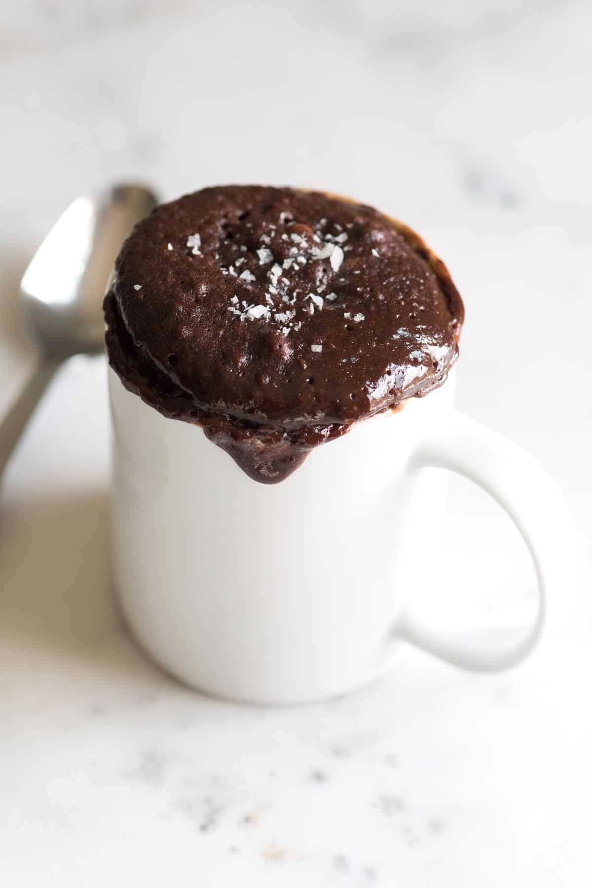

A Brownie in a Mug

Description:
Dessert for one is coming right up with this Single Serve Brownie in a Mug recipe.
Ingredients:
- 4 tbsp flour
- 4 tbsp sugar
- 2 tbsp cocoa
- 2 tbsp water
- 2 tbsp canola oil
- 1 tsp vanilla
Steps:
- Mix together all ingredients in a ramekin or other oven or microwave safe dish.
- Microwave for 1 minute.